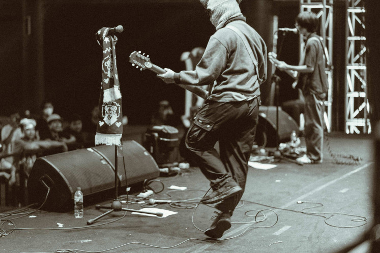

Dongker, sebuah grup musik yang membawakan lagu dengan genre 70s Punk Rock yang berasal dari
Bandung, Jawa Barat. Tepatnya mereka dipertemukan disebuah lingkungan kampus yaitu Institut
Teknologi Bandung (ITB) yang mana sebelumnya semua personil Dongker merupakan mahasiswa kampus
ITB. Nama Dongker semakin dikenal khalayak setelah merilis single mereka yang berjudul
“Bertaruh Pada Api”.
Sejarah
Dongker terbentuk pada tahun 2019, Dongker terdiri dari empat orang, yaitu Arno (gitar & vokal),
Delpi (gitar & vokal), Bilal (bass), dan Dzikrie (drum). Mereka memainkan genre musik punk dengan
tempo cepat yang memiliki khas three chordsnya. Dongker memiliki karakteristik suara gitar yang
kasar, dikenal akan pertunjukan live yang menyenangkan, dan mampu menghidupkan panggung dengan
penampilan yang penuh energi[1].
Pada tahun 2019 Dongker merilis Demo mereka berjudul “Demo 2019” berisikan 5 nomor dengan durasi
yang singkat yang dirilis secara mandiri. Tidak berlama-lama masih di tahun yang sama Dongker
merilis EP mereka yang bertajuk “Upaya Memaki” yang diisi dengan 5 nomor lagu, EP ini dirilis
oleh Greedy Dust Records juga Necros Records dengan betuk rilisan digital, dan fisik berbentuk
cassette.
Tahun selanjutnya tepatnya pada tahun 2020 Dongker kembali merilis EP yang bertajuk
“Menghibur Domba di Atas Puing” masih khas dengan rilisan sebelumnya dimainkan dengan tempo yang
cepat dan berisikan 5 nomor lagu. EP ini dirilis secara digital, dan fisik dalam bentuk cassette
yang dirilis oleh Greedy Dust Records, dan Maldoror Manifesto[2].
Satu tahun melewati pandemi pada tahun 2022 Dongker merilis single mereka berjudul
“Bertaruh Pada Api” merupakan single teratas Dongker hingga menembus angka pendengar dengan jumlah
1,378,895 per 29/03/2023 di Spotify. Single “Bertaruh Pada Api" dirilis oleh Greedy Dust Records
secara digital. Pada tahun 2022 Dongker merilis single lain yang dirilis pada tanggal 13 Desember
2022 berjudul “Sepenggal Sadar”[3].
Tahun 2023 sejauh ini Dongker telah merilis single ketiga berjudul “Tuhan di Reruntuh Kota”
dirilis oleh Greedy Dust Records [4]. Rilisan single tersebut akan dibuatkan sebuah showcase yang
digelar di De Majestic Braga, Bandung pada tanggal 5 Maret 2023. Namun akhirnya tidak jadi digelar
dikarenakan ramainya perbincangan terhadap salah satu personil yaitu Delpi yang tercatat sebagai
Ketua Partai Kebangkitan Nusantara (PKN) di cabang Kota Blitar, namun kemudian mengundurkan diri
setelah hal tersebut menjadi kontroversial dan diberitakan kepada publik[5].